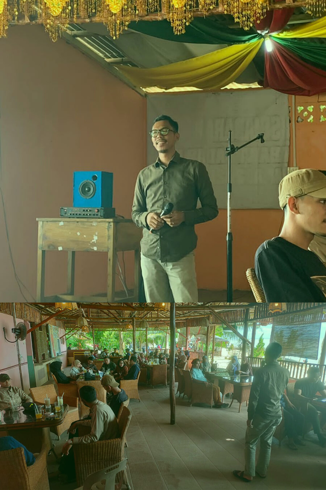

Riuh Bercampur Bahagia, Himpunan Mahasiswa Kundur Menggelar Sembang Alumni
Kamis, 05 Mei 2022 HIMK (Himpunan Mahasiswa Kundur) Tanjungpinang-Bintan melaksanakan kegiatan bersembang bersama keluarga besar Himpunan Mahasiswa Kundur dalam rangka mempererat silahturahmi dibulan syawal. Temu ramah bersama demisioner serta pendiri HIMK menjadi momentum yang sangat luar bisa dan bermanfaat untuk merekatkan silaturahmi segenap keluarga besar HIMK. Sembang alumni HIMK diadakan di Pantai Lubuk tepatnya di Restaurant Nona Singapura. Kegiatan ini menjadi wadah saling mengenal antara demisioner HIMK dengan anggota HIMK saat ini sehingga terwujud organisasi yang mengedepankan rasa kekeluargaan dan kebersamaan. Kegiatan dilaksanakan dengan sederhana namun memberikan kesan yang luar biasa untuk anggota yang menghadiri pertemuan ini. Penyampaian dari pendiri organisasi HIMK dan ketua umum HIMK dari periode pertama sampai ketua umum yang menjabat saat ini menjadi rentetan acara yang paling penting. Banyak sekali pengalaman mengagumkan yang diceritakan oleh pendiri HIMK yang bisa menjadi motivasi bagi anggota untuk menjadi seseorang yang luar biasa serta dapat menghidupkan kembali semangat mahasiswa yang mulai memudar. "Pertemuan kita hari ini bukan hanya untuk duduk lalu mendengarkan, namun pada hari ini kita HIMK jika disebut HIMK maka kita membahas asas kekeluargaan, jadi inilah keluarga kita yang harus saling mengenal dan bertegur sapa dimanapun dan kapan pun . Saya berharap setelah ini hubungan kita akan semakin baik, tidak ada yang namanya miss komunikasi lagi dan jangan malu untuk bertanya kepada senior-senior terdahulu. " ungkap Kakanda Aditya Nugroho Jati selaku pendiri Himpunan Mahasiswa Kundur. Tidak hanya Kakanda Aditya Nugroho Jati yang turut hadir dalam bersembang, namun juga dari ketua-ketua HIMK dan demisioner-demisioner juga hadir membersami dan memberikan motivasi kepada seluruh anggota kepengurusan HIMK, agar kedepannya HIMK lebih baik lagi sebagaimana yang diharapkan. Selain itu, ketua HIMK periode 2021-2022 Kakanda Kurnia Saputra juga turut memberikan penyampaian mengenai harapan untuk HIMK kedepannya. Setelah penyampaian dari ketua-ketua HIMK, dilakukan doa bersama agar kegiatan selanjutnya membawa keberkahan. Kegiatan sembang alumni berlangsung dari pukul 13.00 hingga 17.30. Duduk melingkar sudah menjadi tradisi Himpunan Mahasiswa Kundur. Bukan hanya duduk bersembang saja, kami juga melakukan diskusi dan berbagi cerita seputar perkuliahan dan organisasi. Diakhir kegiatan kami pun melakukan foto bersama untuk mengabadikan momen bersama alumni-alumni Himpunan Mahasiswa Kundur.
Penulis: Manja Nurani